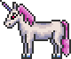

Unicorn
| Drops | |
|---|---|
| Coins: | 10 |
| Item | Rate |
| | 100% |
| Unicorn | |
|---|---|
|  | |
| Statistics | |
| Type | Enemy |
| Environment | The Hallow |
| AI Type | Unicorn AI |
| Damage | 65 |
| Max Life | 400 |
| Defense | 30 |
The Unicorn is a hardmode enemy from The Hallow. It always drops a valuable Unicorn Horn when killed. It is a very fast adversary and has a rather large amount of health. It jumps approximately 7 blocks high or 14 feet high. These factors, combined with a high damage output, can make fighting it difficult.
An effective method of fighting them is to use a Chainsaws or a very fast Sword, as their knockback can hold the Unicorn in place. Ranged-oriented players will need to use Grappling Hooks or Angel/Demon Wings to avoid damage from Unicorns. Another method is to dig a hole just big enough to stand in and use a Dark Lance or other spear, since the unicorn cannot follow down a two-block-wide shaft.
History
- 1.1: Introduced.
- Early mentions:
- Terraria 1.1 Trailer 25th November 2011
- Bunny Power 2nd November 2011
- Sprite teaser from Tiy 6 September 2011